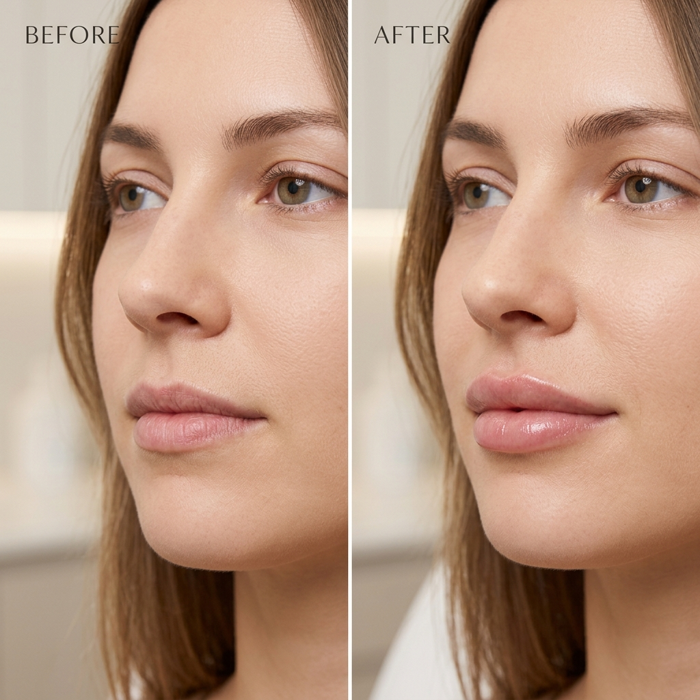
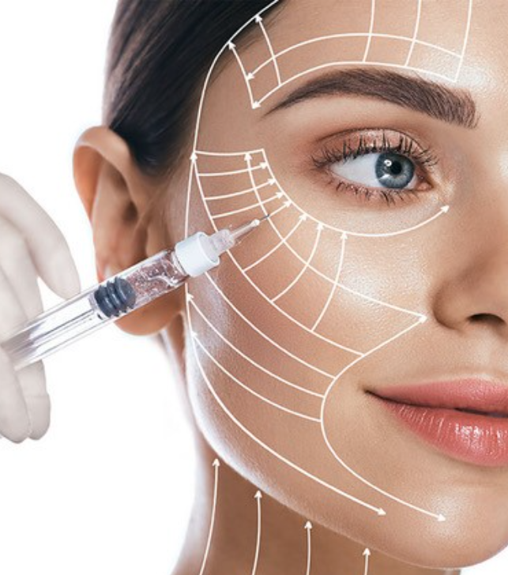
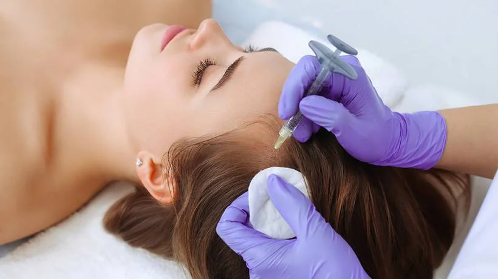
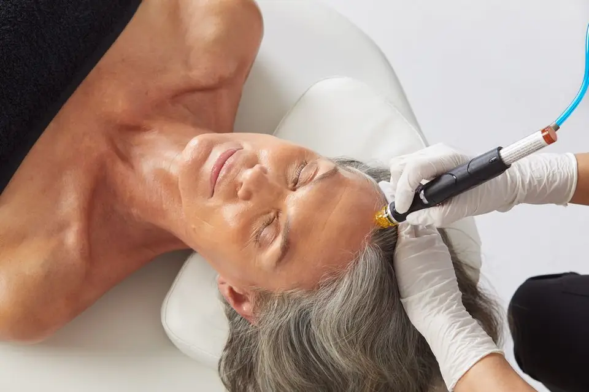
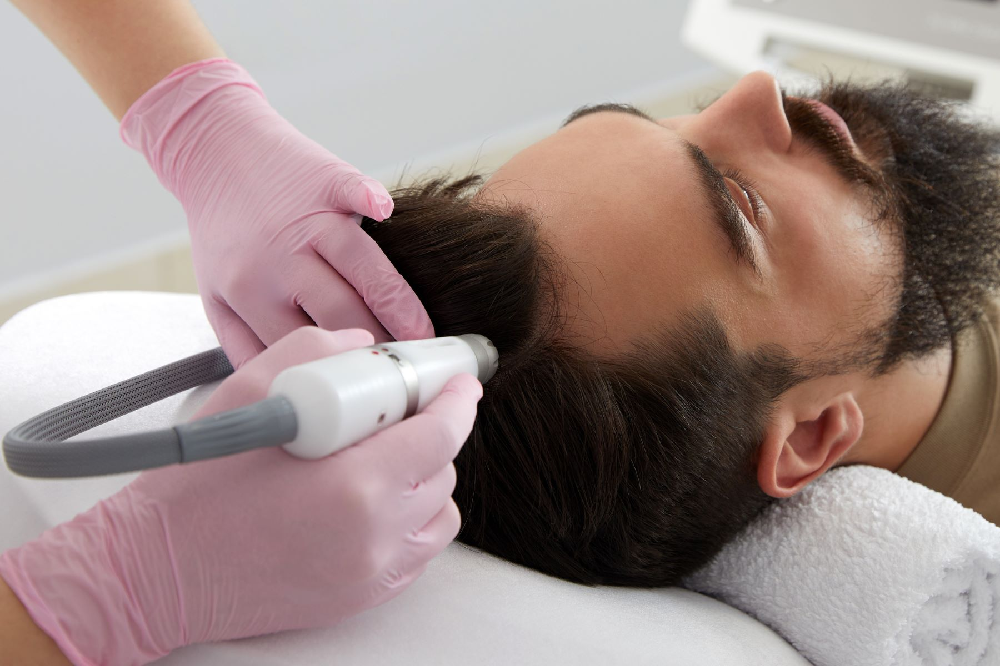
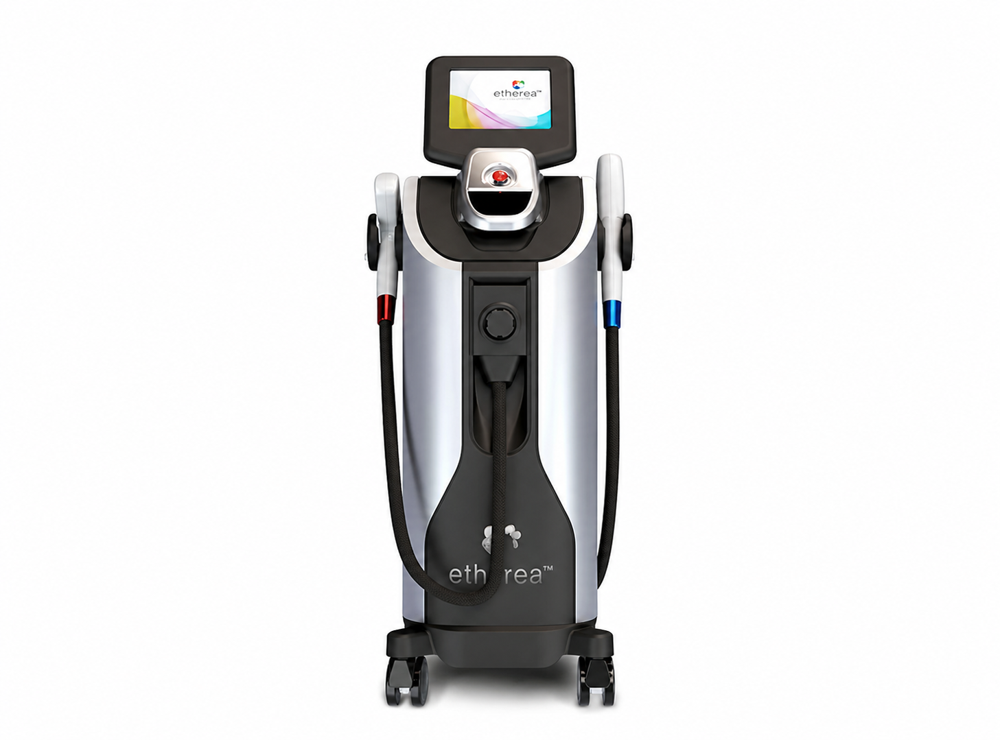
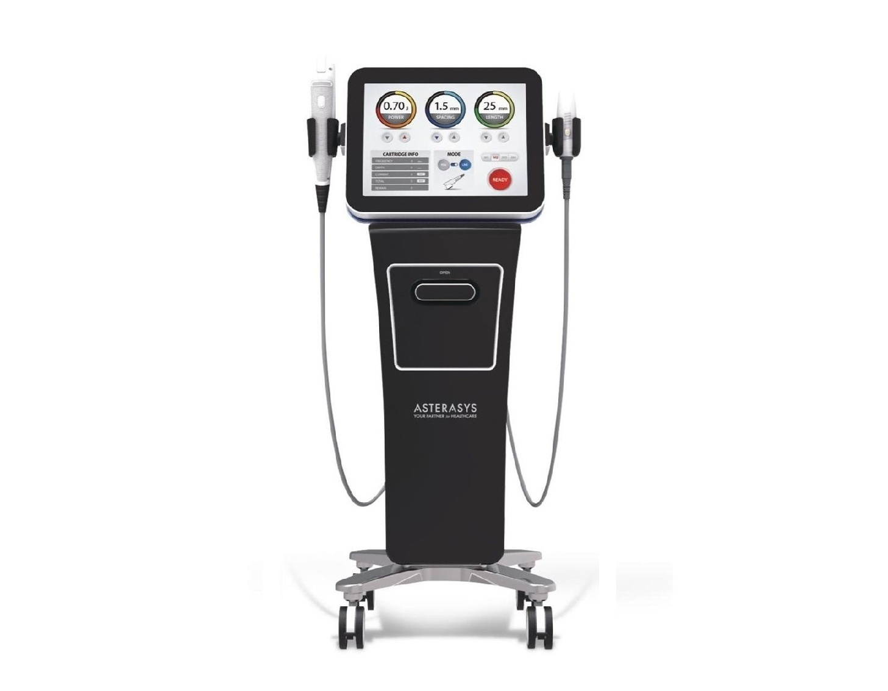
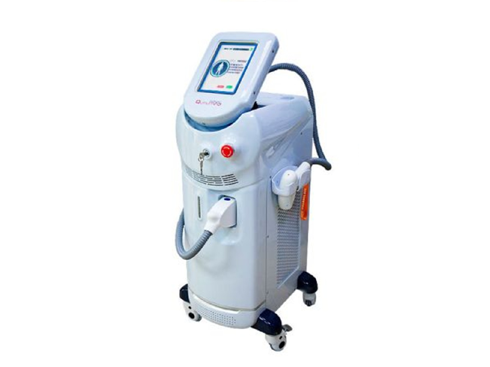
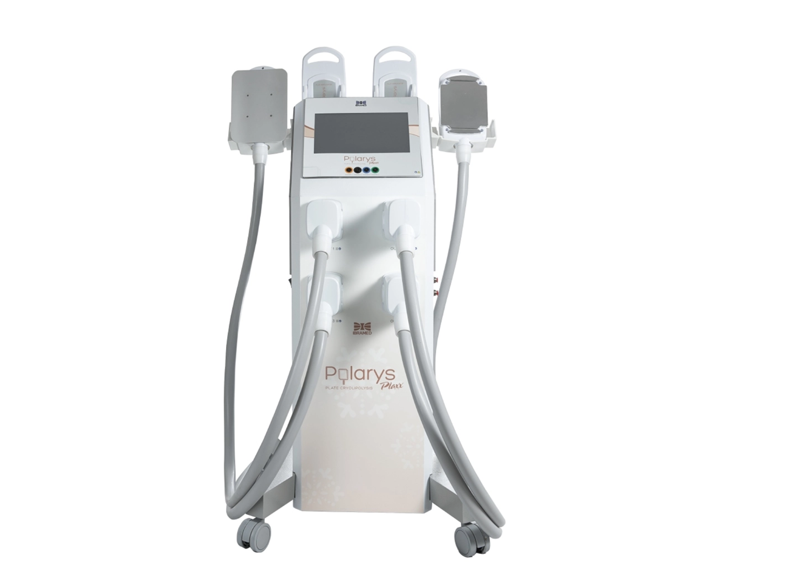
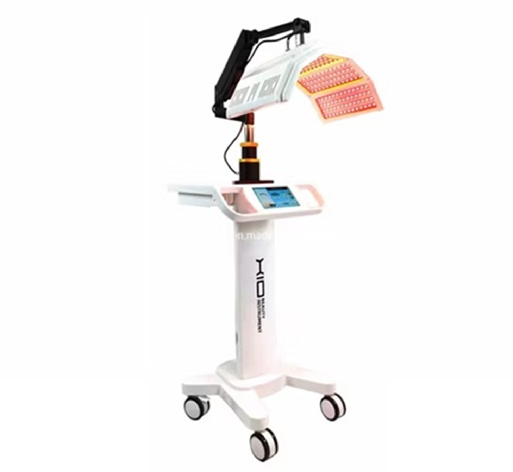

A Clínica
Para transformar sua pele e elevar sua autoestima, apresentamos um espaço inovador. Cada detalhe foi pensado para que você se sinta em casa, recebendo cuidado, carinho e atenção. Aqui, você descobre um ambiente exclusivo, com tratamentos personalizados que oferecem muito mais que beleza: uma verdadeira experiência de qualidade de vida.
Dra. Beatriz Franchito
"O que me motiva é proporcionar melhoras na qualidade de vida dos pacientes. Às vezes pequenas mudanças fazem toda a diferença”
Dra. Beatriz Franchito iniciou sua jornada na área em 2006, no Hospital de Base de São José do Rio Preto. Em 2009, tornou-se membro titular da Sociedade Brasileira de Dermatologia atuando desde então. Com formação ou cursos especificos anos, atende com um enfoque humanizado, valorizando o diagnóstico preciso e individualizado.
- Formação em Dermatologia Clínica
- Dermatologia Estética
- Dermatologia Cirúrgica
Procedimentos
Procedimentos Injetáveis
Tecnologia e precisão para realçar sua beleza natural
Os procedimentos injetáveis são uma das formas mais modernas e seguras de rejuvenescimento facial. Utilizando substâncias biocompatíveis e técnicas avançadas, é possível restaurar volumes, suavizar rugas e estimular a produção natural de colágeno, mantendo resultados naturais e harmônicos.
Na clínica, cada tratamento é realizado de forma personalizada, respeitando a anatomia e as características únicas de cada paciente.

Procedimentos com
Ácido Hialurônico
Equilibra proporções, melhora contornos e valoriza traços naturais com ácido hialurônico.
Toxina Botulínica
Suaviza linhas de expressão, previne rugas profundas e promove um aspecto descansado e rejuvenescido.

Bioestimuladores
Ativam a produção natural de colágeno, promovendo firmeza e rejuvenescimento gradual.
Cirurgia Dermatológica
Diagnóstico preciso e tratamentos seguros para a saúde da pele
A cirurgia dermatológica é essencial para o diagnóstico e tratamento de diversas condições da pele, incluindo lesões suspeitas e tumores cutâneos.
Os procedimentos são realizados com técnicas modernas e minimamente invasivas, priorizando segurança, precisão e conforto para o paciente.
Biópsias de Pele
A biópsia dermatológica é um procedimento diagnóstico fundamental para identificar doenças de pele e avaliar lesões suspeitas.
Remoção de Tumores de Pele
A remoção cirúrgica de tumores cutâneos é realizada com técnicas que preservam ao máximo a estética da pele, garantindo segurança e eficácia no tratamento.
Tratamentos Capilares
Tecnologia avançada para saúde do couro cabeludo e dos fios
A saúde capilar depende de um couro cabeludo equilibrado e de tratamentos específicos para cada tipo de queda ou fragilidade dos fios.
A clínica utiliza tecnologias modernas e protocolos personalizados baseados em mesoterapia capilar, promovendo fortalecimento, crescimento e recuperação da vitalidade dos cabelos.
Mesoterapia Capilar
A mesoterapia capilar consiste na aplicação de ativos diretamente no couro cabeludo, estimulando os folículos e fortalecendo os fios.
Protocolos Capilares Personalizados
Cada paciente recebe um protocolo exclusivo baseado na análise do couro cabeludo e da saúde capilar.



Tecnologias
Equipamentos modernos para tratamentos precisos e eficazes
Na clínica contamos com tecnologias avançadas que permitem tratar diversas condições da pele com precisão, segurança e excelentes resultados.

Éterea
Plataforma dermatológica multifuncional que permite tratar diversas condições cutâneas.

Liftera
Ultrassom microfocado que promove lifting facial e estimulação de colágeno.
Laser de CO2
Tecnologia para rejuvenescimento, cicatrizes e melhora da textura da pele.

Depilação a Laser
Remoção progressiva dos pelos com segurança e conforto.

Criolipólise
Tratamento para redução de gordura localizada por resfriamento controlado.

LED Terapia
Utilizada para tratamento de lesões inflamatórias, acne e regeneração da pele.